Y si volviera a empezar, te elegiría a ti una y mil veces más.
Hemos pasado cosas hermosas, momentos difíciles, risas, viajes, peleas, abrazos, lágrimas y reconciliaciones.
Pero mira, mi amor… después de todo, seguimos aquí. Y para mí eso vale más que cualquier cosa.
Nuestra historia en pedacitos de amor
Esto no es solo una galería de fotos. Es un pedacito de nosotros, de todo lo que hemos vivido desde que éramos más jóvenes,
desde esos primeros momentos llenos de ilusión, hasta cada viaje, cada fiesta, cada aventura y cada prueba que nos enseñó
a no soltarnos.
Cada imagen guarda una parte de lo que somos, y también una promesa que quiero hacerte:
así como vivimos estos momentos desde el inicio, quiero seguir viviéndolos contigo pasen los años que pasen,
con más amor, más sueños y muchas más historias juntos.
Collage de recuerdos
Todo lo que hemos vivido juntos
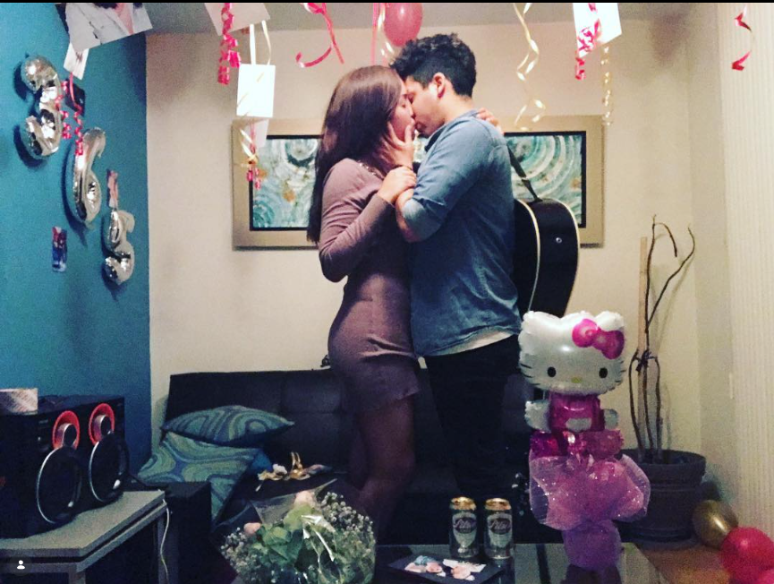
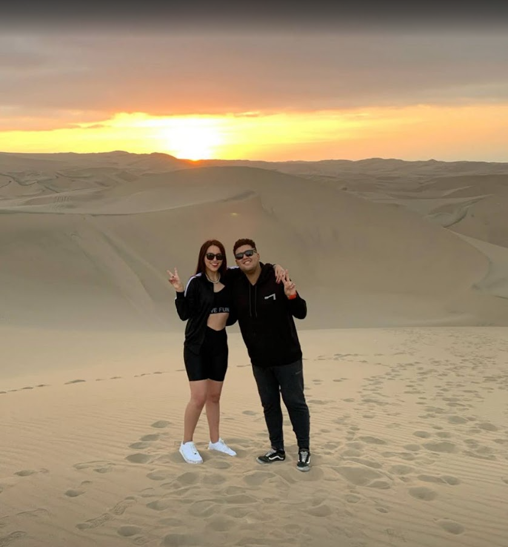
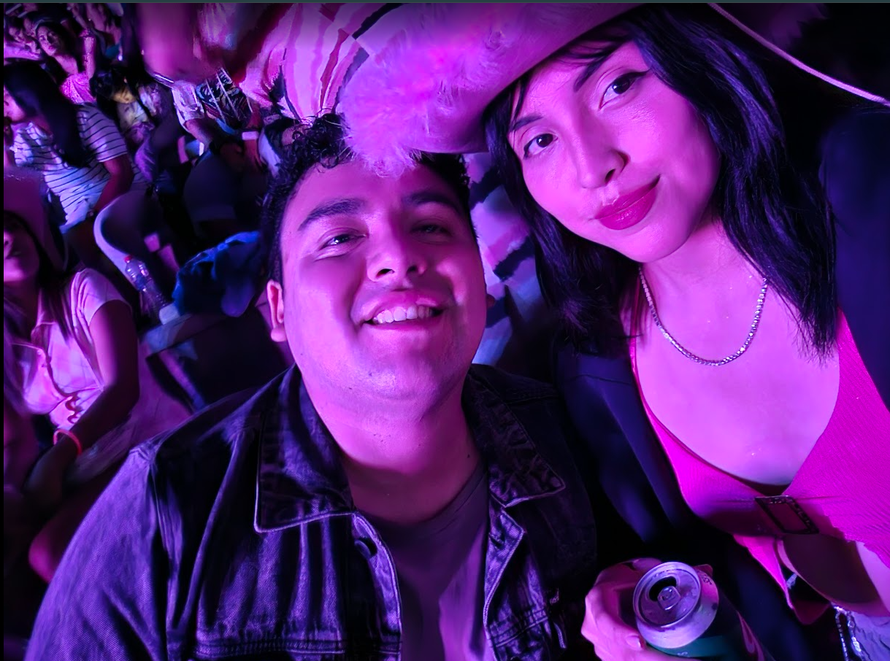
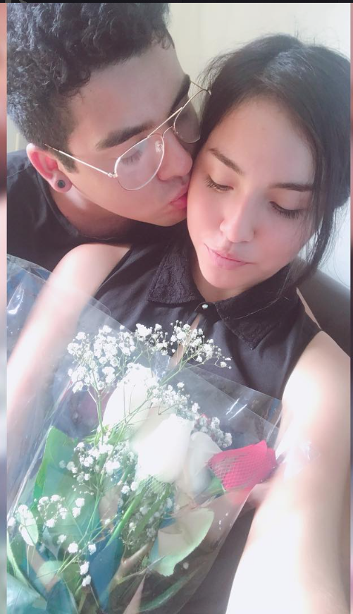
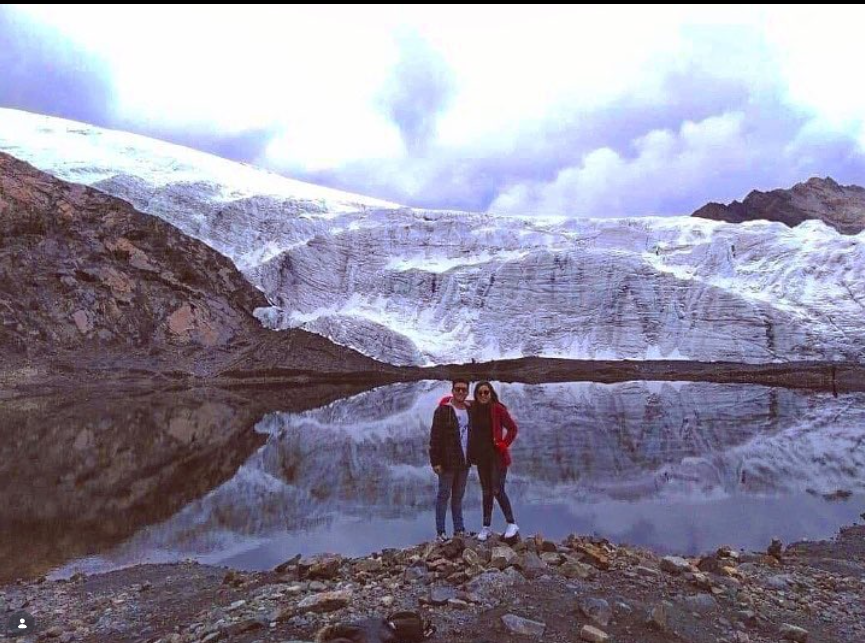
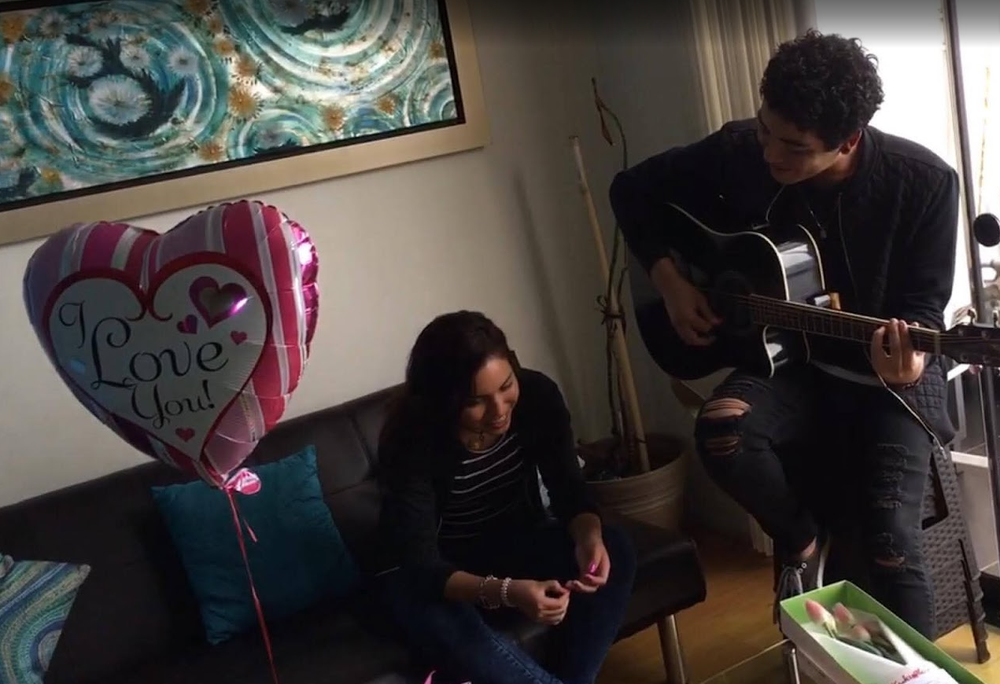
Capítulos de nuestra historia
Lo que fuimos, lo que somos y lo que seguiremos siendo
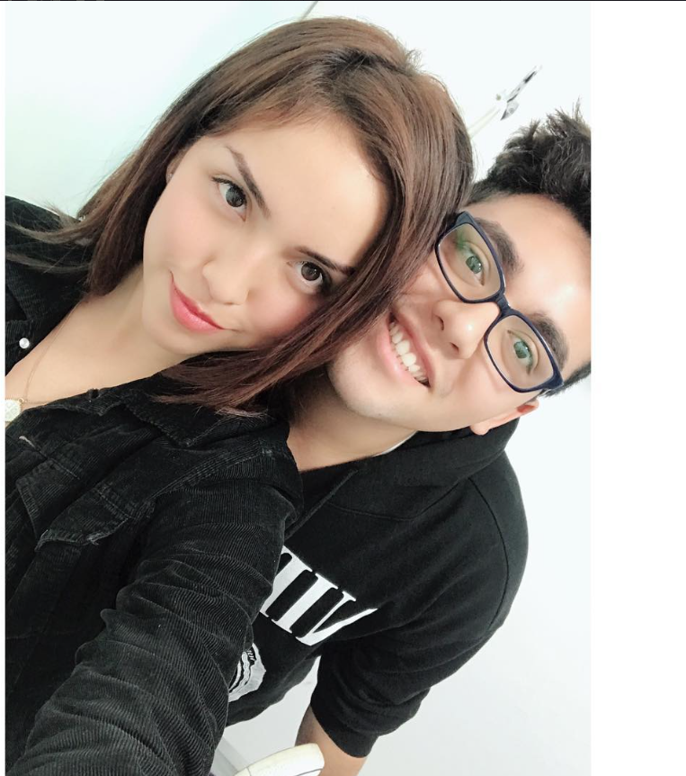
Nuestros inicios
Cuando todo empezó a sentirse especial
Hola mi amor, recuerdas aun como comenzo? eramos 2 desconocidos que sin pensar o darnos cuenta, teniamos un lazo que nos unia.
Todo comenzo con locuras, salidas, risas, "perdidas jejeje", pero hay algo que marco la diferencia, esa sonrisa, esos ojos,
que siempre estabas a mi lado sin importar lo que pasara, a donde fueramos, mas por mas miedo que nos daba el lugar, siempre
me acompañaste. Como te dije cuando te conoci, siempre que este a mi lado voy a protegerte.
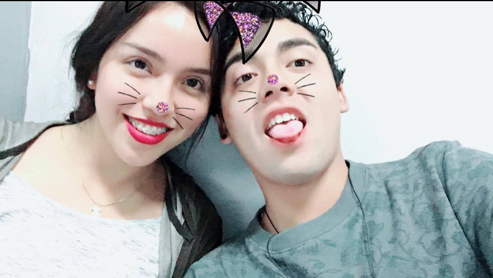
Complicidad
Risas que se quedaron conmigo
Me encanta recordar cada locura, cada sonrisa, cada momento que no sabiamos que nos esperaba pero siempre improvisabamos
y eso me hizo sentir tan vivo. Contigo entendi que no tiene que ser perfecto para ser inolvidable. A veces solo bastaba
que estemos juntos, solo bastaba que estes a mi lado para cualquier momento, día se volviera especial.
Etapa de enamoramiento
Cuando quería hacerte sentir especial
Cada momento, cada historia narra una historia de nuestro, que solo tu y yo conocemos. Le agresco a Dios por haberte puesto
en mi camino, porque desde que te vi sonriendo empece a enamorarme mas de ti. Disculpame si a veces no supe como sorprenderte
o demostrate como antes mi amor, pero quiero que sepas que ese amor sigue aqui, y a partir de ahora seguira creciendo, porque
solo deseo hacerte feliz cada día de mi vida.
Amor
Un amor que se elige
Si algo aprendí en estos 9 años, es que amar no es solo sentir bonito. Amar también es cuidar, perdonar,
tragarse el orgullo, aprender y volver a intentarlo. Lo nuestro no ha sido perfecto, pero ha sido real,
y por eso lo valoro tanto.
Celebraciones
Cada aniversario contigo tiene un valor inmenso
No celebro solo una fecha. Celebro que después de tantas cosas seguimos siendo nosotros.
Celebro cada caída que superamos, cada abrazo que nos volvió a unir y todo lo que todavía sueño vivir contigo.
Quiero muchos años más de aniversarios, besos, viajes y nuevos comienzos a tu lado.
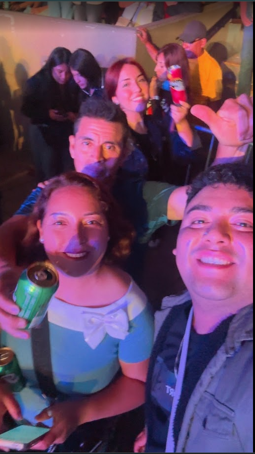
Familia y compañía
Momentos que se sienten como hogar
Agradecido con la vida, con dios porque puso a en mi vida una mujer con una familia hermosa que siempre me hizo sentir en casa
cada momento, a pesar que llegar fue dificil, jejejeje las amenazas jaja las choques hubieron, siempre supe que era parte de un
proceso, que tu familia solo queria protegerte, y yo tenia que demostrar que valía la pena y que no me rendiria facilmente.
Esta es una parte de la historia que quiero continuar contando, creando, y que siga creciendo mas si es contigo. Te amo mi amor.
Fiestas y aventuras
Contigo todo se vive diferente
Contigo cada día es una locura, un día estoy en mi casa, al otro estoy en un concierto, al otro estoy en un viaje,
al otro estoy en una fiesta, y así sucesivamente, pero lo que más me gusta es que cada momento se siente diferente,
se siente especial, se siente como si fuera la primera vez. Y aunque a veces no sepamos qué nos espera, sé que mientras
estemos juntos, cualquier lugar puede convertirse en nuestro lugar favorito.
Viajes
Caminar contigo siempre será mi lugar favorito
Los viajes contigo me enseñaron que no se trata solo del destino, sino de la persona que va a tu lado.
Donde sea que estemos, si voy contigo, el camino vale la pena. Quiero seguir conociendo el mundo contigo,
una aventura, una foto y un sueño a la vez.
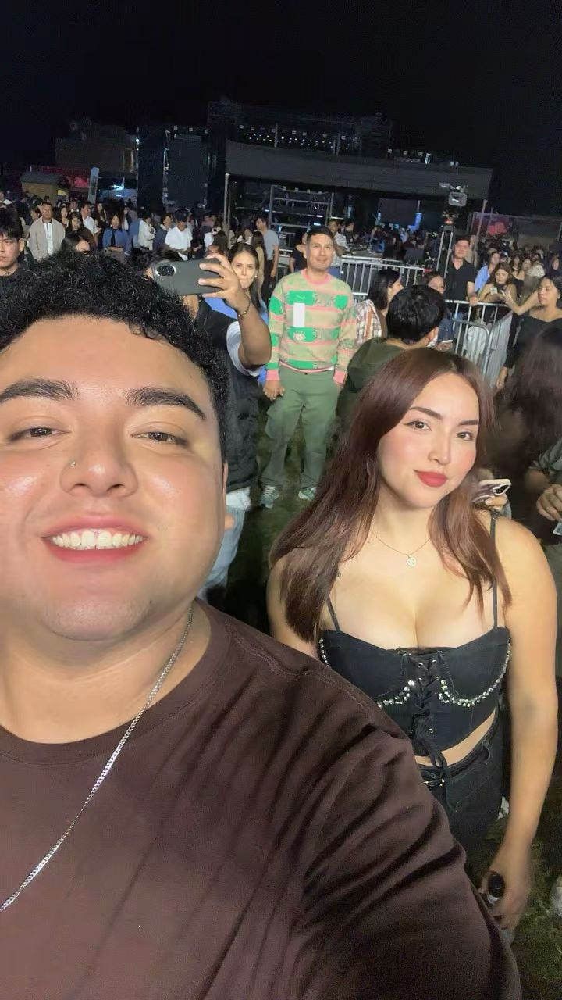
Recuerdo especial
Una foto convertida en magia
Cada concierto, cada momento contigo es especial, este día fue una locura, verte corriendo emocionada por todos
lados, sin conocer el rumbo, pero esa emocion de verte feliz, disfrutando cada momento, cada canción, la noche
no nos lo quita nadie. Nadie mas sabe lo que vivimos somos tu y yo, viviendo, disfrutando y haciendo de cada
momento algo inolvidable.
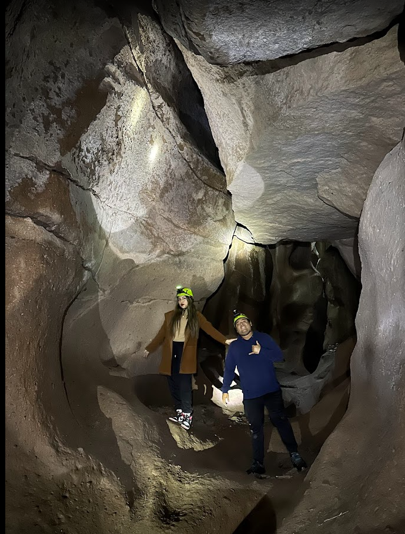
Aventura
Hasta en los caminos difíciles, contigo
Recuerdas esta foto? caminabamos sin saber que nos esparaba con miedo a que apareciera
un murciélago o insecto jajajaja pero estabamos juntos y cada reto es algo que hemos superado
siempre. Nuestra historia siempre fue asi desde que nos conocimos, con caminos retadores, con momentos
de incertidumbre, pero siempre más bonitos cuando decidimos recorrerlos juntos.
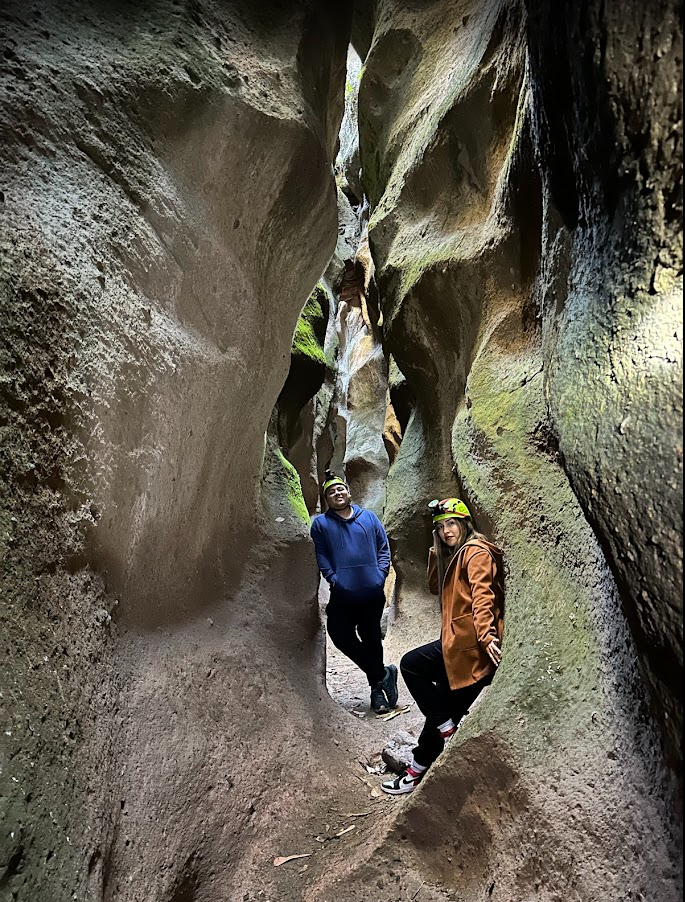
Adversidades
Lo nuestro también aprendió a ser fuerte
No todo fue fácil. Tuvimos altos y bajos, días donde costó entendernos y momentos donde la vida nos puso a prueba.
Pero seguimos aquí, y eso hace que este amor sea aún más valioso para mí. Porque lo nuestro no se rindió;
aprendió, creció y siguió adelante.
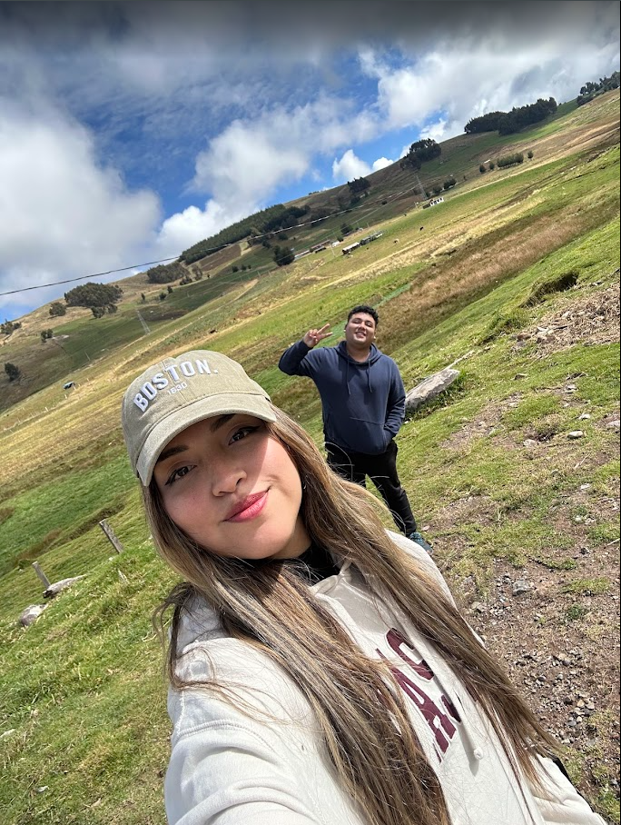
Naturaleza
Mi paz también tiene tu nombre
En cada paisaje bonito que he visto contigo, siempre he pensado lo mismo: el lugar puede ser hermoso,
pero compartirlo contigo lo hace inolvidable. Y quiero que la vida nos regale muchos más paisajes así,
con nosotros tomados de la mano.
Sueños
Quiero seguir coleccionando lugares contigo
Quiero más viajes, más fotos, más historias, más planes y más sueños cumplidos a tu lado.
Porque contigo no solo recuerdo el pasado; contigo también imagino mi futuro, mi hogar, mi familia
y una vida llena de momentos que todavía nos faltan vivir.
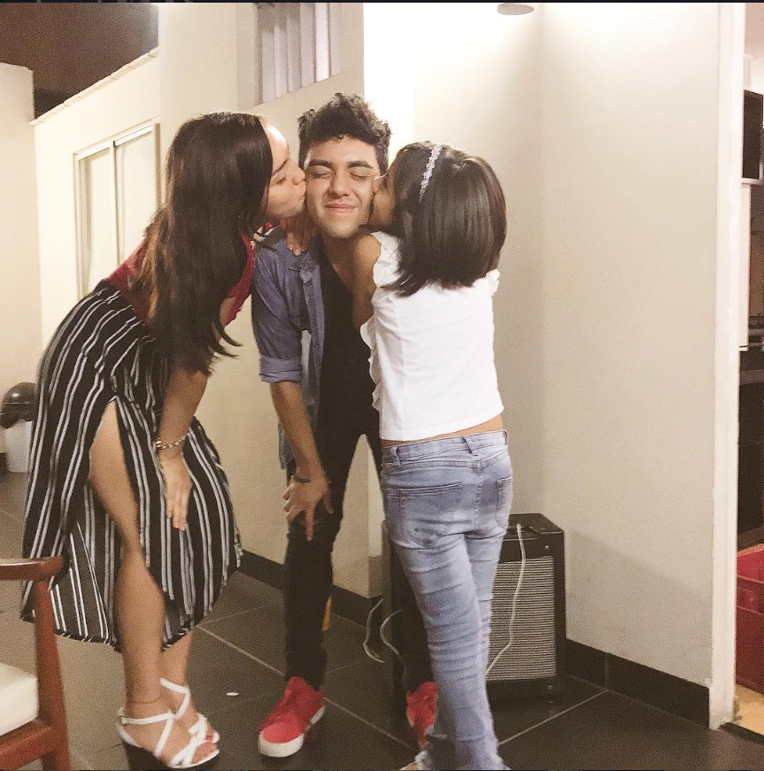
Mis dos amores
Personas que hacen mi vida más bonita
Esta foto tiene un significado especial, porque une amores importantes de mi vida.
Me recuerda que tú no solo eres mi pareja; eres parte de mi mundo, de mi familia y de mi corazón.
Y eso es lo que deseo para siempre: que sigas siendo parte de mi vida en todos sus capítulos.
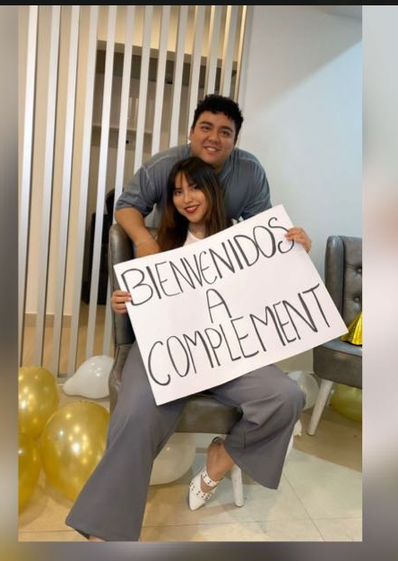
Nuestro emprendimiento
Complement, un sueño que también construimos juntos
Esta foto tiene un lugar muy especial en mi corazón, porque no solo habla de nuestro amor,
también habla de nuestros sueños. Complement es parte de nosotros, de todo lo que imaginamos,
de lo que queremos lograr y del futuro que deseo construir contigo.
Me emociona pensar que esta empresa que tenemos juntos nos va a hacer crecer mucho.
No solo como emprendimiento, sino también como pareja, porque detrás de todo esto hay esfuerzo,
ilusión, apoyo y muchas ganas de salir adelante de tu mano.
Más recuerdos que guardo contigo
Experiencias que quiero seguir viviendo a tu lado
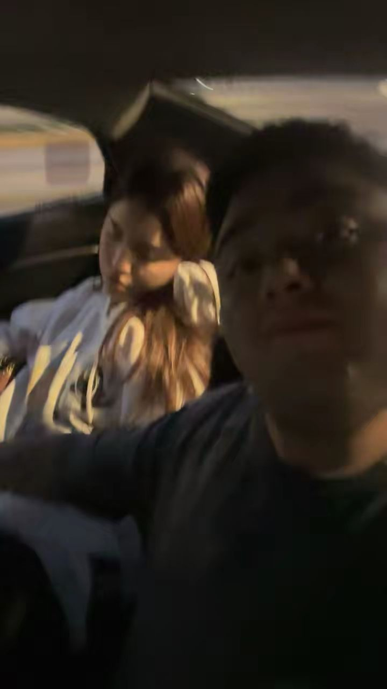
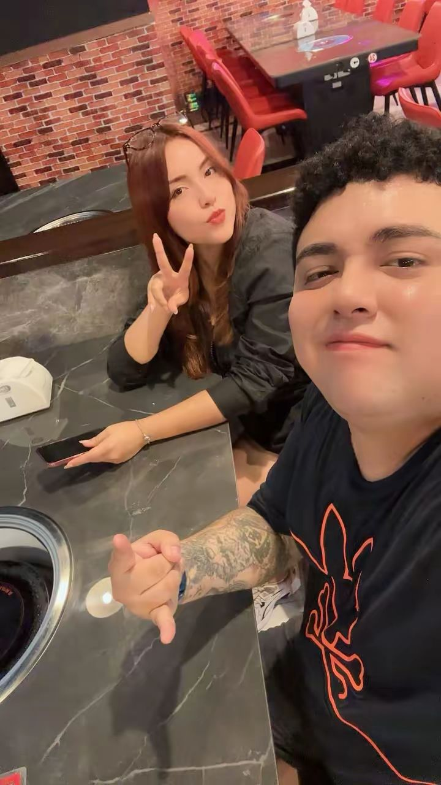
Me encanta que nuestra historia también esté llena de experiencias nuevas, momentos locos, conciertos,
salidas y recuerdos espontáneos. Porque contigo hasta los días más simples se vuelven especiales,
y cada cosa que vivimos juntos termina siendo una razón más para seguir agradeciendo que estés en mi vida.
Y que la historia continúe...
Al mirar estas fotos, no solo veo lo que vivimos; veo todo lo que todavía quiero vivir contigo.
Quiero que los viajes sigan, que las fiestas sigan, que las risas sigan, que los abrazos sigan
y que este amor que empezó hace años siga creciendo, aunque el tiempo pase y la vida cambie.
Porque así como estos momentos se vivieron al inicio, quiero que se sigan viviendo siempre:
con ilusión, con fe, con amor y con esa certeza que tengo en el corazón:
entre tantas personas en el mundo, yo te seguiría escogiendo a ti.
Para ti, mi amor
Lo que quiero decirte
Mi amor, si estás leyendo esto, quiero que sepas que no hice esta página solo para mostrarte fotos bonitas.
La hice porque necesitaba encontrar una forma de decirte todo lo que a veces siento y no siempre sé cómo explicar.
Tú no eres cualquier persona en mi vida. Tú eres quien muchas veces me ha dado fortaleza cuando sentía que no podía más.
Has estado conmigo en mis mejores momentos, pero también en los más difíciles, cuando quizá ni yo mismo sabía cómo seguir.
Gracias por no dejarme caer, por apoyarme, por hacerme más fuerte cada día y por quedarte incluso cuando las cosas no fueron fáciles.
A tu lado entendí que el amor no solo se vive en los días bonitos; también se demuestra cuando hay que luchar, perdonar, aprender y seguir.
No hay amor más lindo que el que tengo contigo. Te elegiría una, mil y todas las veces más,
porque eres tú con quien quiero compartir mi vida, mi futuro, mis proyectos y cada sueño que todavía nos falta cumplir.
Solo deseo compartir esta historia contigo, seguir escribiéndola juntos y que cuando pasen los años podamos mirar atrás
y decir: “valió la pena todo, porque nunca dejamos de elegirnos”.
Mi deseo para nosotros
Quiero que esta historia tan linda tenga un final feliz contigo: un hogar, una familia,
una vida construida con amor, paciencia, fe y muchos sueños compartidos.
Deseo compartir el resto de mi vida a tu lado. Te amo.
Terminemos esta linda historia de amor juntos y sigamos construyendo más historia ♥
Después de 9 años, sigo sintiendo que encontrarte fue una de las bendiciones más bonitas de mi vida. ❤️
.jpeg)